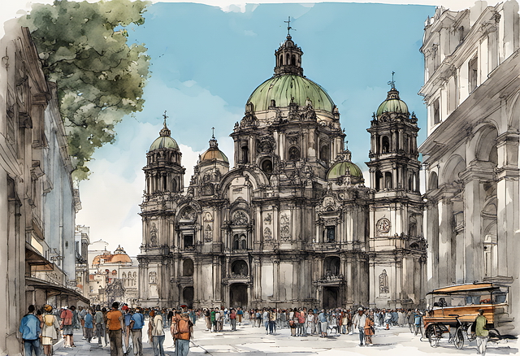
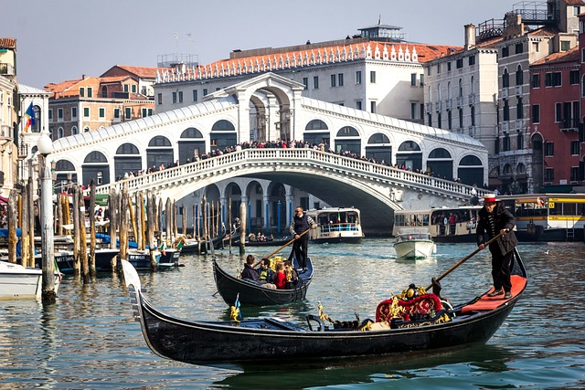
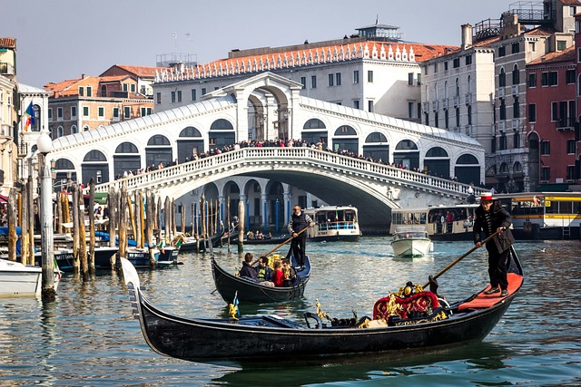
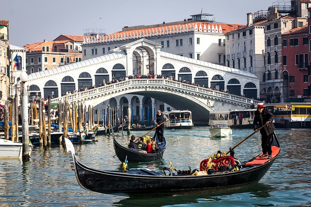

이탈리아의 역사와 관광 명소
이탈리아는 고대 로마 제국의 중심지로, 수천 년의 역사와 예술이 공존하는 나라입니다. 로마의 콜로세움과 포로 로마노는 당시 제국의 위엄을 지금도 느낄 수 있게 해줍니다.
피렌체는 르네상스의 발상지로, 미켈란젤로와 다빈치 같은 예술가들의 발자취가 남아 있습니다. 또한 베네치아의 수상 도시 풍경, 아말피 해안의 절벽 마을, 그리고 카프리 섬의 푸른 동굴은 자연과 인간이 조화롭게 만들어낸 명소들입니다.
이처럼 이탈리아의 도시는 각각 고유한 매력을 지니고 있어, 여행자는 한 나라 안에서 여러 시대를 여행하는 듯한 기분을 느낄 수 있습니다.



 

